0x01 Z3简介
1 | Z3 is a theorem prover from Microsoft Research. It is licensed under the MIT license. |
Z3是微软研究院的一个定理证明工具(SMT求解)，它是根据MIT许可证授权的，能够解决给定约束条件来求解满足值的问题。通常用来检查表达式的逻辑是否满足。
Z3在计算机领域常用于软件验证、逻辑分析等；CTF中常被用于密码学、二进制逆向、符号执行、Fuzz等领域。Angr中就内置了一个Z3约束求解器用来求解满足条件的路径约束。
0x02 安装
贴一下gayhub地址：https://github.com/Z3Prover/z3
clone下Z3源码，进入文件目录
1 | python scripts/mk_make.py --python |
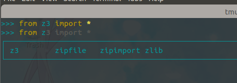
//bpython真好用，补全还有自动提示，只是循环的时候和低版本的ipython一样不能回到上一行
0x03 常用API
Solver()：创建求解器
add()：变量之间增加约束条件
check()：检查约束条件
model()：列出求解结果
Int()：声明一个整形的变量
Real()：声明一个实殊变量
BitVec()：声明一个变量数组
0x04 实例
iscc2018 Reverse My_math_is_bad
拿到题目首先扔ida看一下，找到主要逻辑
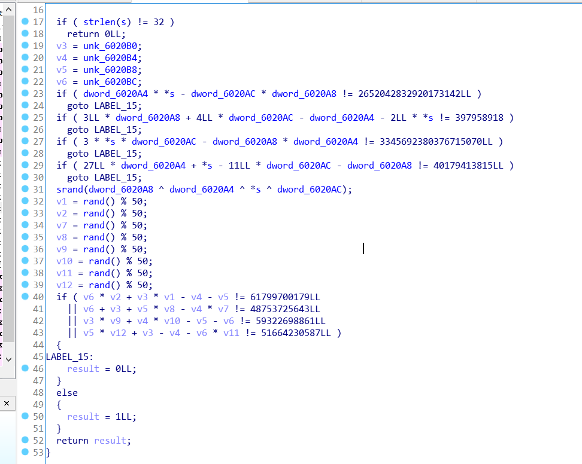
逻辑还是很简单的，输入32个字节大小的字符串，4字节一组转为整形，一共分成8组，前四组后四组满足两个方程组就行了。
大二的时候做这道题的时候用的matlab解的，orz，变量一个一个敲进去，是很烦了，还是Z3方便，一把梭。
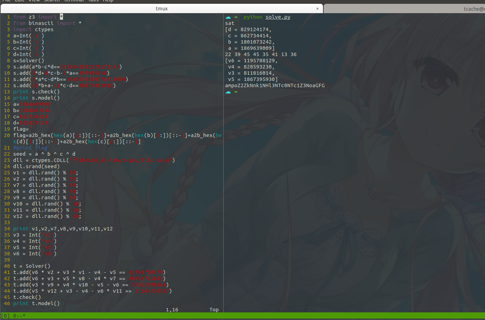
逻辑可以说很清晰了，申明变量，建立约束，再整形格式化成字符串就是flag了
贴下脚本：
1 | from z3 import * |
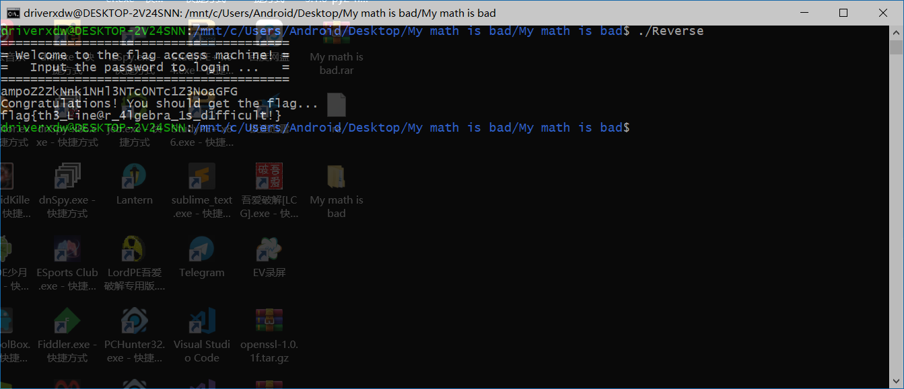
iscc2018 Reverse obfuscation_and_encode
main函数里面函数还是非常清晰的：
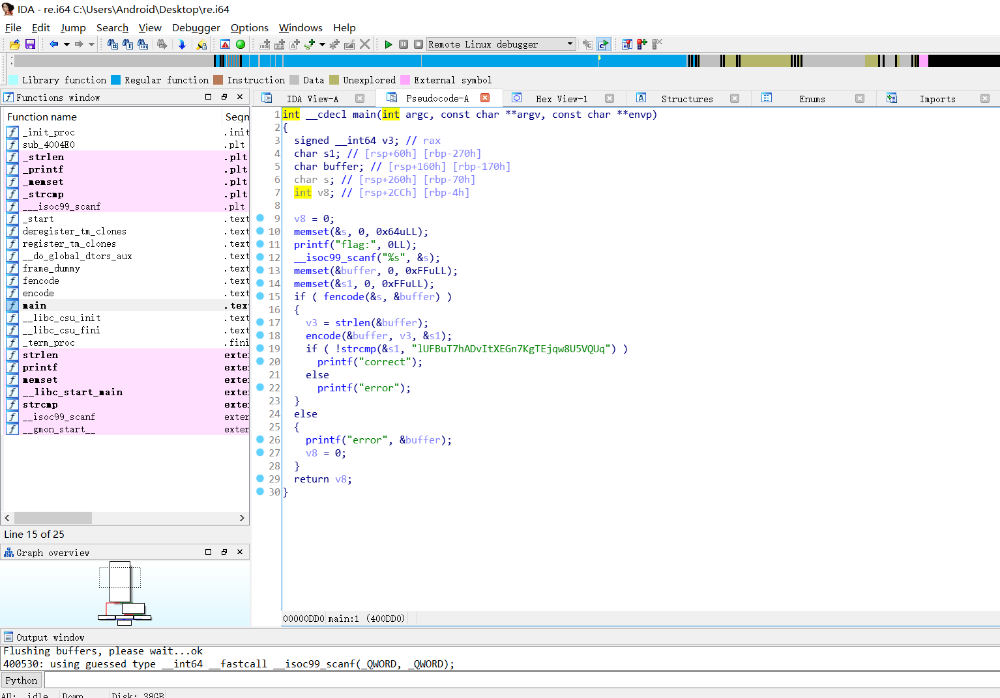
发现主要是fencode和encode两个函数，对输入进行加密，之后与固定字符串lUFBuT7hADvItXEGn7KgTEjqw8U5VQUq进行对比，先分析一下fencode函数，分析参数大概能猜出它做的操作。
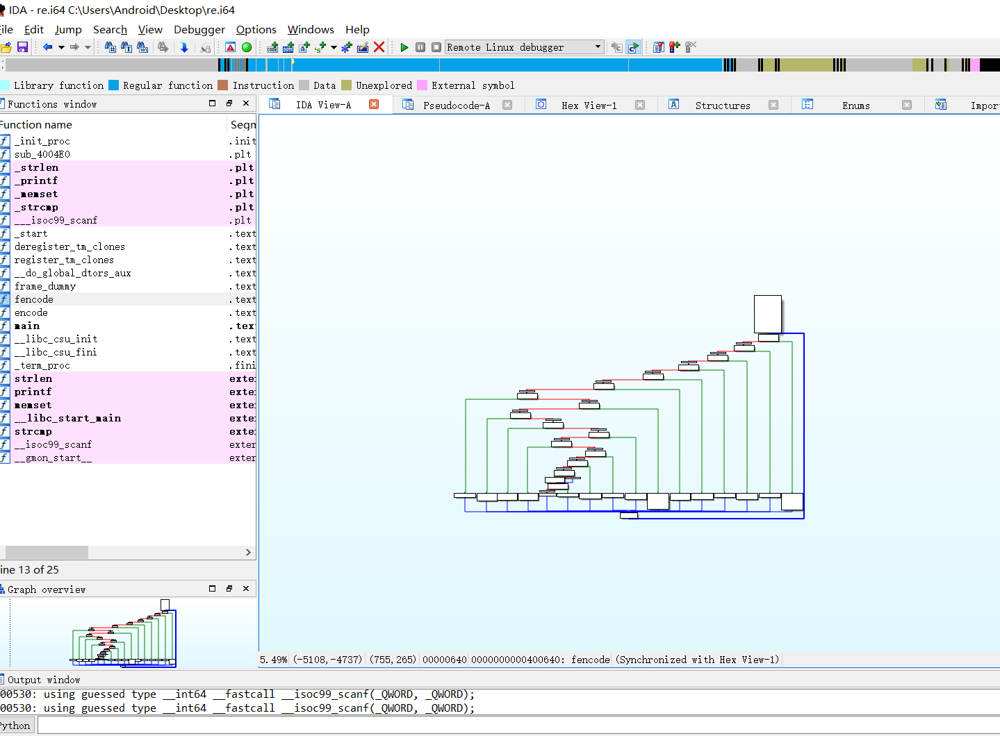
看cfg发现是控制流平坦化，程序应该是用ollvm混淆过的，一般逻辑贼复杂的那种都是用pin或者angr跑的，但是这题好像混淆后的逻辑并不复杂，给关键代码下断动态调一下：
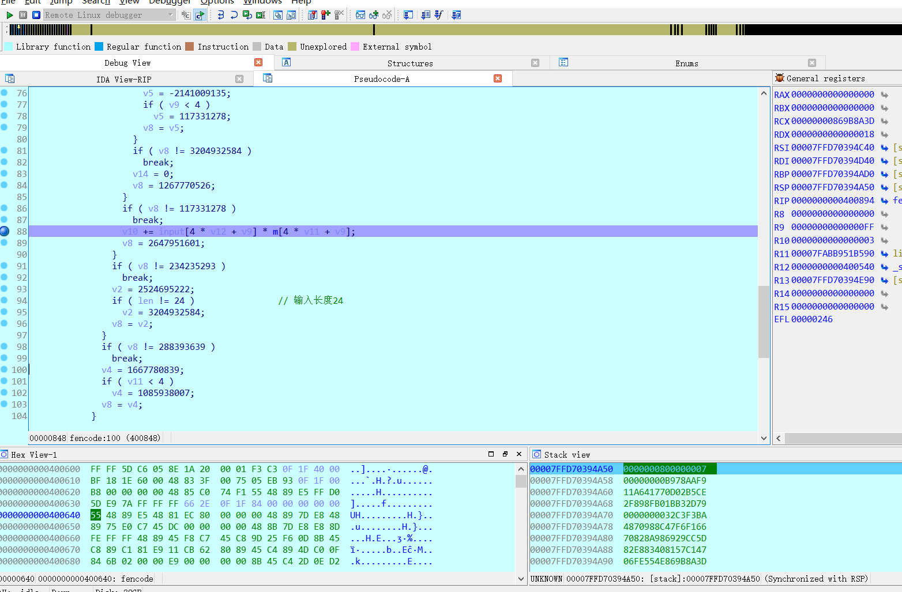
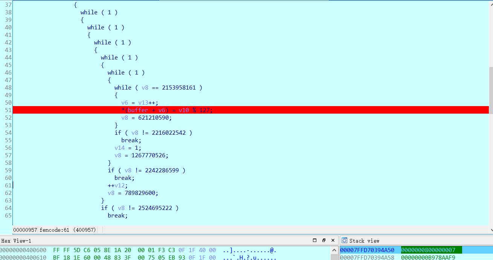
大致能分析出逻辑：输入24个字节大小的字符串，4个字节分一组，分成6组，每一组与[{2,2,4,-5},{1,1,3,-3},{-1,-2,-3,4},{-1,0,-2,2}]中对应idx的数组进行乘法操作，结果相加。一共生成6组*4数组个大小的字节，也就是24个字节，存入buffer数组中。
之后encode函数，看参数和之后要对比的字符串其实就能猜出来，再看一下逻辑：
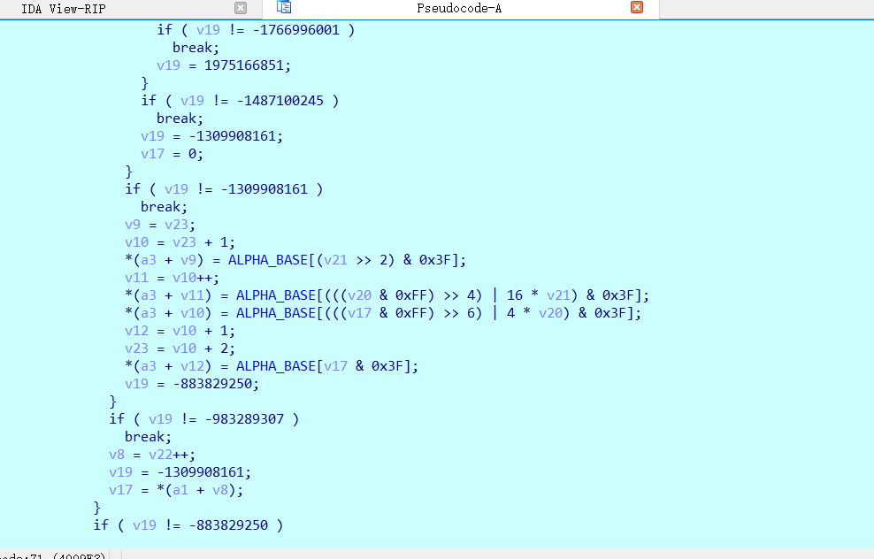
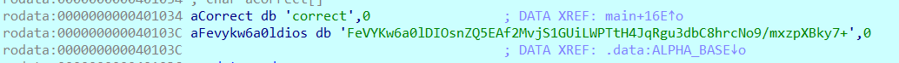
根据汇编代码看出是个3转4的操作，确定是base64，看ALPHA_BASE发现已经被替换了。很常见的base64表替换加密，encode的加密就清楚了。
还原出伪代码：
1 | for(v12=0;v12<6;v12++) |
这边贴下代码：
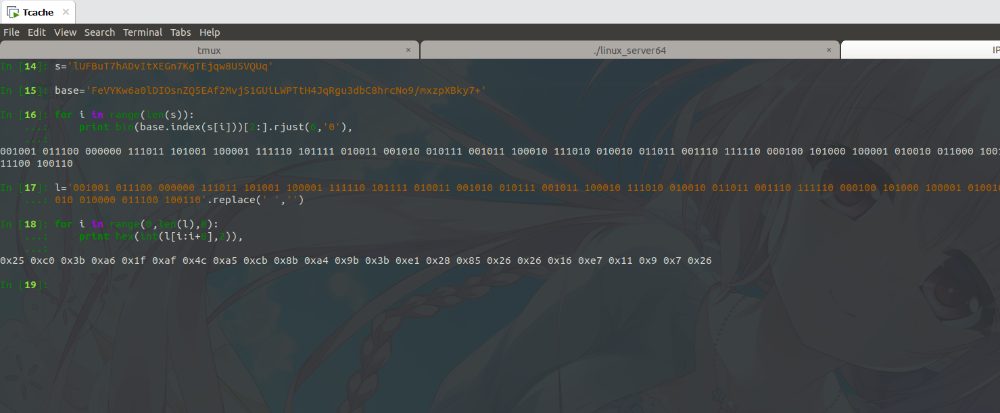
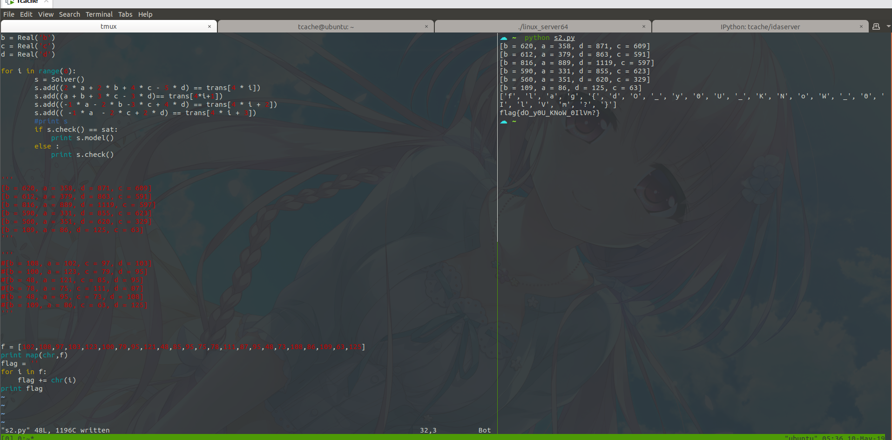
1 | from z3 import * |
0x05 总结
Z3的接口还是很多的，这边只用了几个常用的，这边贴一下文档：
https://z3prover.github.io/api/html/namespacez3py.html
https://ericpony.github.io/z3py-tutorial/guide-examples.htm
https://rise4fun.com/Z3/tutorial/guide
这个视频讲的自动化分析挺不错的，贴一下：
https://www.bugbank.cn/live/view.html?id=111348
之前打算去分析Z3源码的，后来一想其实没必要，毕竟这种专门处理数理计算的工具内部实现肯定设计到一些数学定理？？？23333333，猜测类似的有对浮点指令集等操作的函数实现，肯定是很复杂的。Z3牛逼~